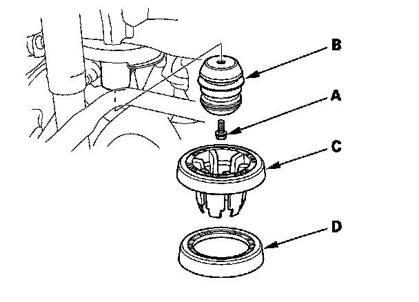

Suspension Travel Bumper: Service and Repair
Spring/Bump Stop Removal/InstallationSpring/Bump Stop:
Removal
1. Raise the rear of the vehicle, and support it with safety stands in the proper locations.
2. Remove the rear wheel.
3. Remove the muffler hanger (A).
4. Remove the flange nut (A) while holding the respective joint pin (C) with a hex wrench, then remove the stabilizer link from the lower arm B.
5. Position the floor jack under the lower arm B. Raise the floor jack until the suspension begins to compress.
6. Remove the flange bolt (A) from the bottom of the damper.
7. Remove the flange bolt (C) from the knuckle.
8. Lower the floor jack gradually.
9. Remove the spring (A) and the lower spring seat (B).
10. Remove the flange bolt (A) that connects the body, and remove the bump stop (B) the spring guide (C) and the spring mounting cushion (D) if necessary.

Installation
1. Install the bump stop (A) the spring guide (B) and the mounting cushion (C) then tighten the flange bolt (D) to the specified torque value if removed.
2. Install the spring (A) and the lower spring seat (C). Align the bottom of the spring and the lower spring seat with lower arm B as shown.
3. Position a floor jack under the lower arm B.
4. Slowly raise the floor jack until you can align the bolt hole with the holes in the lower arm B and the knuckle and install the new flange bolts.
5. Install the stabilizer link on the lower arm B, then loosely install the new flange nut (A).
6. Raise the floor jack until the hole in the trailing arm aligns with the hole in the damper.
7. Tighten the flange bolts to the specified torque values.
8. Tighten the flange nut to the specified torque values, while holding the respective joint pin with a hex wrench.
9. Install the muffler hanger (A).
10. Clean the mating surface of the brake disc/drum and the inside of the wheel, then install the rear wheel.
11. Check the wheel alignment, and adjust it if necessary.